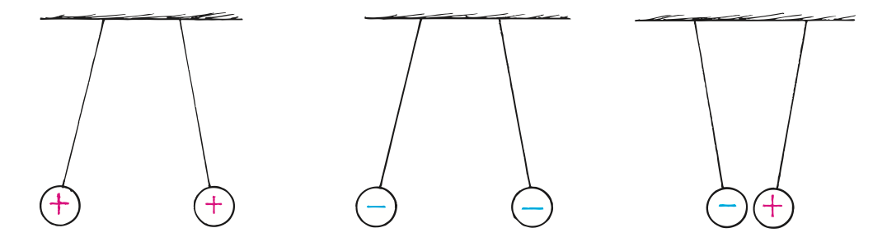

Electricity
Electricity is the name given to a wide range of electrical phenomena that, in one form or another, underlie just about everything around us. It’s in the lightning from the sky, it’s in the spark when we strike a match, and it’s what holds atoms together to form molecules. The control of electricity is evident in technological devices of many kinds, from lamps to computers. In this chapter, we will investigate electricity at rest, static electricity, or simply electrostatics.
Electrostatics involves electric charges, the forces between them, the aura that surrounds them, and their behavior in materials. In Chapter 23, we’ll investigate the motion of electric charges, or electric currents. We’ll also study the voltages that produce currents and how they can be controlled. In Chapter 24, we’ll study the relationship of electric currents to magnetism, and, in Chapter 25, we’ll learn how magnetism and electricity can be controlled to operate electrical devices and how electricity and magnetism connect to become light.
An understanding of electricity requires a step-by-step approach because one concept is the foundation on which the next concept is based. So please pay extra attention in studying this material. It can be difficult, confusing, and frustrating if you’re hasty, but with careful effort, it can be comprehensible and rewarding. Onward!
Electrical Forces
What if there were a universal force that, like gravity, varies inversely as the square of the distance but is billions upon billions of times stronger? If there were such a force and if it were attractive like gravity, the universe would be pulled together into a tight ball, with all matter pulled as close together as it could get. But suppose this force were a repelling force, with every bit of matter repelling every other bit. What then? Then the universe would blow itself apart in short order. Suppose, however, that the universe consisted of two kinds of particles—positives and negatives, say. Suppose that positives repelled positives but attracted negatives and that negatives repelled negatives but attracted positives. In other words, like kinds repel and unlike kinds attract. Suppose that there were equal numbers of each kind of particle so that this strong force were perfectly balanced! What would the universe be like? The answer is simple: It would be like the one we are living in. For there are such particles and there is such a force. We call it the electrical force.

Inside every piece of matter are atoms. And what is inside every atom? Positive and negative charges held together by the enormous attraction of electrical force. By forming compact and evenly mixed clusters of positives and negatives, the huge electrical forces have balanced themselves out almost perfectly. When two or more atoms join to form a molecule, the molecule also contains balanced positives and negatives. And when trillions of molecules combine to form a speck of matter, the electrical forces balance again. Between two pieces of ordinary matter, there is scarcely any electrical attraction or repulsion at all because each piece contains equal numbers of positives and negatives. Between Earth and the Moon, for example, there is no electrical force. The much weaker gravitational force, which only attracts, remains the predominant force between these bodies.